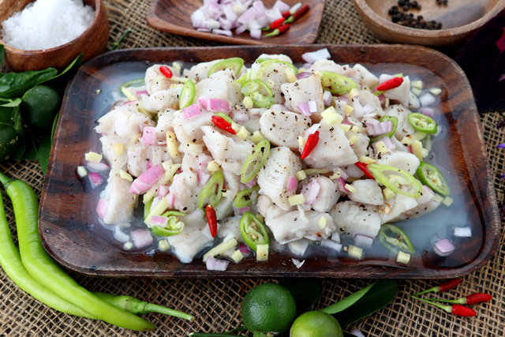

Kinilaw is a classic Filipino salad-like dish of raw seafood cured in vinegar, citrus, and aromatics. It is a popular Visayan specialty often made with fish, shrimp, or shellfish and flavored with coconut milk, ginger, onions, and chili.
In the Visayas, kinilaw is a celebrated appetizer and pulutan served fresh from the market or beach. The acidic cure preserves the seafood while delivering bright, tangy flavors that complement chilled drinks and festive gatherings.
Kinilaw |
Rinse and pat dry the fish. Cut into bite-sized cubes and transfer to a glass or ceramic bowl.
Pour vinegar or calamansi juice over the fish. Add ginger slices, salt, and pepper. Toss gently and let it marinate for 5 to 10 minutes until the fish turns opaque.
Stir in sliced onions, chopped chilies, and coconut milk if using. Adjust seasoning with additional salt or calamansi juice to taste.
Transfer the kinilaw to a serving bowl and enjoy immediately with steamed rice or as a pulutan.
Watch this step-by-step video guide on how to prepare authentic Kinilaw: